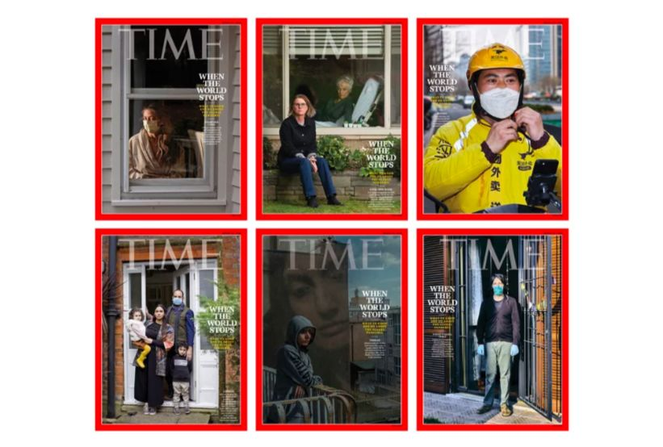

我在海外 | 在墨尔本开小店，正为澳大利亚人团购中国厕纸
原文链接 备份链接 在疫情爆发前，澳大利亚人宁愿用贵一点的本国厕纸，也不会考虑中国品牌的。 文 | 张惠南 我是上海人，在澳大利亚墨尔本定居已经一年了，经营着当地一家有着二十年历史的社区便利店。每天都和客人聊聊天，喝喝茶，看看报纸，下午 …
导言
岁末年初以来，新冠肺炎疫情蔓延全国。医护人员冲锋在前，病人的生死、同胞的安危，无不牵动着我们的心。近期，我们将陆续推出一系列文章、笔谈，围绕和此次疫情以及历史上类似公共危机相关的政治、经济、法律、文化的复杂成因及后果，进行分析和反思，也将尝试在古今中外相关的历史经验中，从人类曾经面临的各种灾难与危机中寻找镜鉴。
今天我们推送斯坦福大学社会学系教授周雪光老师对美国疫情发展所做的逐日记录。自3月4日起，周雪光老师决定每日发布文章，“跟踪记录一下自己经历到的美国有关疫情应对的过程。”我们征得周雪光老师的同意，在此分为数期予以转发。从中我们可以看到美国如何一步一步走入新冠病毒疫情的阴云笼罩之下，并以一种内部的眼光去观察政府与民众的应对；与此同时，透过作者的选择与点评，我们也能感受来自社会科学学者的比较制度研究的独特视角。在众声喧哗之下，这种清明的理性，正是我们所期许的。今天转发的，是其于2020年3月4-8日的记录。
周雪光教授为文研院学术委员，曾受邀主讲“跨学科视野下的制度研究”系列讲座。感谢他的授权发布。

周雪光教授在文研讲座现场
3月4日·周三
清晨打开email时，两封email与新冠病毒疫情有关，特别涉及到不同国家针对这一病毒的不同应对举措。
这让我想起来，我应该跟踪记录一下自己经历到的美国有关疫情应对的过程。这是比较制度研究的一个好机会。好吧，从今天开始，每天记录一段，若有感想，也一并放上。随这里疫情发展进行时，边看边议，有点社会科学中现在倡导的关于研究设计的pre-registration的味道。
这几天来，所住地—加州湾区—关于Covid-19（新冠病毒的英文学名）的风声渐起。一周前，亚太研究中心主任发email 提醒大家，学校已经更新疫情警报，禁止学校师生到中国、南韩旅行。昨天，中心将原定下周三的关于中国Covid-19状况的公共讨论会无期限地推迟了。昨天收到学校 “environmental health & safety” 部门的AVP Russell Furr 发出通知：
“At Stanford, we are aiming to balance two imperatives: We are seeking to continue our work of education and research to the greatest extent possible, while also keeping our community safe and protecting the health of communities beyond our campus, as well.”
Sections covered in the memo are:
• Events – At this time, it’s strongly encouraged to cancel or postpone events you are hosting between March 4 and April 15 that involve more than 150 participants.
• Courses – Regularly scheduled Stanford academic courses will continue.
• Use of technology encouraged for meetings
• Enhanced cleaning and preventive hygiene
• International travel restrictions
Moving forward, the university will post all information regarding COVID-19 on healthalerts.stanford.edu
这几天开车时公共电台上时常有关于疫情情况的讨论，对政府的无所作为，特别是CDC在检测方面的保守行为颇有批评。读到消息说，白宫成立副总统为首的应对机构，统一发布信息口径。但这里的信息渠道是四处大开的，各个电视台、电台、网站自说自话，所谓”官方统一口径“不过是”白宫官方“作为许多信息源之一统一口径。但它没有能力来统一白宫以外的信息源。
这几天来到Starbucks，感觉人流明显减少了。现在是下午1：30，往常这个时点座无虚席，我经常需要在室外路旁找到座位，但今天半数以上的位子是空的。数了一下，才11个顾客，平时应该三、四倍于此。这几天早上来到这里时，和几位咖啡友聊天的内容也每每涉及到这个题目了。前些日子，大家关切中国的情形，这几天话题说到本地的疫情情况了。
到目前为止，听到的事件都距离甚远（华盛顿州、纽约），没有引起紧迫感。加州Davis前些日子发现一例不明来源的感染病人，引起大家关注。这几天没有新的消息。在信息公开、快速传递的情况下，没有消息就是好消息。
不过，据报道，前段时间CDC严格控制检测，所以有可能有许多感染病人没有得到确诊。现在开放了检测程序，有人估计，几天后确认病例可能会大幅上升。而且令人担心的是，学校春假马上就到了，大批学生会外出旅行。不过，在疫情阴影下，也有不少人已经取消行程了。昨天课上一位研究生说，她本准备春假去韩国旅行，现在已经取消。我的一位RA原计划去外地，现在也准备待在校园了。大家都在根据自己接收到的信息来调整自己的行为。是不是足以应对疫情危机？拭目以待？
这学期在旁听我们系一位助理教授给研究生开的“网络方法”课，明天是最后一次授课（下一周是冬季学期的最后一周，内容是学生presentation）。这不，刚刚接到他发给大家的email，感觉不适，考虑到疫情，明天的课取消了，大家可以通过email和他联系谈课程project。
中午，朋友转发了加州检测的通知：
“转发 - 加州活动免费新冠肺炎检测步骤如下：1. 拨打加州公共卫生部健康风险值班电话 XXX-XXX-XXXX. 2. 提供完整的个人信息，如果你有剧烈咳嗽、发烧和呼吸困难，对方根据你的情况告知你到哪所医院进行检查，他们会提前通知做好准备和隔离措施。”
可能是我的防御本能不强，对这个事情一直没有急迫感。前几天收到若干国内朋友来信的关心询问，才意识到这可能是个事。不过，参加各种活动，包括每天至少一次（经常两次）去咖啡店的routine并没有更改。
以前没有定时看电视新闻的习惯。上个星期，换了新的internet provider后，还没有来得及接通当地电视台。看来，为了记录这个应对过程，应该尽快接通电视频道。
下午形势急转直下。网上读到change.org上斯坦福学生发起的petition，要求校当局马上采取紧急应对病毒的紧急措施，一天前发起，今天傍晚已有2000人签名。
傍晚读到学校EH&S的更新通知：禁止学校相关的所有国际旅行；建议取消学校相关的国内旅行，因私事的旅行也鼓励尽可能减少。这一系列动作比较大。
系主任发email，转述学校EH&S通知，并转来UCSD校方关于疫情采取的一系列决定。
国内朋友发来信件，告知加州州长宣布紧急状态，要我当心。宣布紧急状态，不一定意味着情况多么糟糕，而是为了启动预防和资源动员程序，以备不测。
小结一下。各个工作单位各自部署安排，平行的信息流动和相互借鉴，尚未感到任何一级政府的积极作用。
这一篇把前几天的情况放在一起罗列了一下，有点啰嗦，以后应该是进行时的节奏。

美国《时代》周刊“新冠肺炎”专题封面集：“当世界停滞”
3月5日·周四
早晨新闻说，纽约州新添5位检测positive。JetBlue, United 减少美国国内航班。
上午工作间隙浏览了一下中文社会媒体。有趣的观察是，国内社会媒体微信上关于其他国家抗疫情况的报道讨论越来越多了，看来有点东方发亮、西方沦陷的趋势。微信上读到徐静波文“原来， 日本的传染病学家们都不是傻瓜”，谈日本的防疫理念，鼓励公众自我隔离，医治肺炎患者，但并不大规模检查，这些方面与美国目前做法很是相似。”界弟医学界“发布的”台湾抗疫经验“ 获顶刊点赞，JAMA称表现突出，也很是成功。
还看到一段新加坡卫生部长的讲话视频，大意是，这一病毒传染主要是通过接触，而不是空气，所以戴口罩不是最好的防护措施，保持视角距离，多洗手、减少公共场所的表面接触（surface touch）更为重要。一篇“谣言惑众！美国CDC没有停止公布确诊和死亡人数”，主要告诉读者，美国各州有自己的公布渠道，CDC没有权力停止公布，而且事实上也没有“停止公布”。另一篇裴洪刚的文章“不知道谁是携带者，为什么只建议有症状的人，而不是所有人都戴口罩”。下面的评论区中吐槽了各种“形式主义”，长官意志的情景。
这真是一个很好的信息流通和公民意识教育的机会。
下午，收到微信上传来的“Covid-19 tracker”。自己输入自己的信息，如：是否检测阳性，是否有症状。可以打开”covid-19 map” 看到在Google Map上自己位置附近是否有各类疫情问题的人员分布。看了一下，有症状或检测阳性的情况，在这一带（Palo Alto ）还未出现。不过，这些信息来自App使用者“自报家门”，可靠性取决于参与者的广泛性和真实性，效果如何，有待后观。
2pm 收到学校关于疫情期间教学的指导意见。从现在到学期结束（两周），教学、考试形式不变，但要求患病者自我隔离，要求任课老师灵活对待有困难的学生。信件说道：“学校有关部门是在与流行病专家和研究人员、临床医生和当地公共卫生部门咨询后做出这一决定的“。
傍晚去参加系里一位退休老先生的告别party。Dick S. 是我读研期间第一门组织社会学课的老师，可以说是我进入这一领域的引路人。他和太太在斯坦福校园居住近60年后，决定搬到距离这里数十英里的女儿附近居住。在party上见到了多年的熟人。大家按照新的流行方式，避免皮肤接触，触肘致意；也有不少人也有违反norm而拥抱的。聊起来，话题不时地转到了疫情。虽然感到疫情尚远，但空气中已有几分紧张气氛。
很有意思，仍然是平面的、局部的、各自对策处理的局面。
网上朋友更正我昨天的错误表达：covid-19不是新冠病毒，是新冠病毒肺炎。新冠病毒是sars-cov-2。

3月5日，新加坡，一位科学家正在提取检测试剂
3月6日·周五
一早去Starbucks，还是过去的那些熟人，打了招呼后各自工作。一小时后回家，马上洗手，这是最近养成的习惯。这几天的媒介介绍专家知识说，这次的病毒传染主要是通过触摸传播，而不是空气传播，所以不主张戴口罩，一是无用，二是不断整理口罩，更易引起触摸传染。主要预防措施是：1. 保持社交距离（keep social distance）；2. 勤洗手、减触摸。这是疫情研究至今的后见之明。
（补充：前次我写道，据研究发现，病毒主要不是通过空气传染，专家不主张戴口罩。但网上朋友的纠正说的对：戴口罩可以帮助避免唾液飞溅导致的传染。公共卫生常识之一即是咳嗽或打喷嚏时一定要用纸巾或衣袖遮盖住嘴，并把纸巾丢进垃圾桶。）
考虑到触摸传染问题，晨练形式改游泳为山上走路。
早晨的NPR news 报道，旧金山发现两例，另有预计抵达旧金山的一游轮上发现21名患者，在海上逗留，等待检查。疫情阴影越来越近。
中午查看email，（1）系里行政人员转发学校关于取消business-based旅行与相应的因取消航班引起的费用的报销问题的通知；（2）学校取消原定四月初录取研究生校园聚会的通知，系里的同样聚会也随之取消；（3）学校体育场所管理机构发布的有关体育锻炼场所卫生健康的注意事项（勤洗手、有病自我隔离等）。
美国疾控中心（CDC）发出通告，建议老年人尽可能待在家中，远离人群聚集场合（机场、娱乐、宗教），以避免病毒传染。
下午2点来到Starbucks, 只有13个人，往常应该是两三倍的人数。拿出今早用过的空杯来续杯（第一杯，2.79刀，以后续杯 50分），店员告诉我，因为防止病毒传染，不再用旧杯，可以提供新杯续杯，我欣然接受，想起昨天在radio上已经听到这个消息。
Starbucks里来了一群人，好像是一个大家庭，一位70岁左右老人，两个年轻母亲，两个5、6岁的孩子，无忧无虑地，真好；但我有点为他们担心。
从家走到Starbucks，大约两公里，20多分钟。走在行车道旁边的人行道上，另一边是一栋栋住房和门前的小小草坪。很长的道路笔直，若不是上下班高峰时分，路上车辆很少，路边树木枝叶稀疏，可以看出去很远。感觉很好，想到网上看到的那张武汉照片，一位医务人员推着一位躺在移动病床上的老人（据介绍）在室外遥望远处高楼大厦背后夕阳。有人PS出阳光灿烂的一片金色，令人动容。想到许多居民困在住房长达40多天，真是感慨不已。
收到系里转来的email，针对疫情，校园清洁服务的公司近日会提供“enhanced cleaning”清洁服务，特别是针对人们经常触摸的区域。学校教师俱乐部发来通知，增加了公共卫生（净手）设施和措施，但仍然开门营业。美联航email通告，在机场和飞行中的公共卫生措施和建议。
网上免费订阅了CNN Coronavirus Fact vs. Fiction Newsletter，每天发送到信箱。
晚5时，收到教务长发给大家的email报告说，斯坦福两位本科生，与疫情病人有过接触（exposure），已经到学校医院进行了检测，检测结果需要24小时得知。他们已经离开学校住处，进行自我隔离。稍后又有消息，校园发现若干案例。
下午时分，最近的案例还在数十公里以外；傍晚，疫情突然就在身边了。
晚8：25. 教务长发出全校通告：下周一起，冬季学期的最后两周（3月9-20）全校不再教室聚集上课，尽量改为网上授课。四月份的本科生录取的“admit weekend event”的活动也取消。学校组织的各种参观活动均取消。
我旁听“网络方法”课程的老师已经发出email，告诉上课同学们下周的presentation改为网上视频，指导如何使用网上视频设备等。我看了一下时间，这位青椒的这封网上教学email距教务长“网上教学”的通告之间仅有20分钟！
8：50，学校教学部门发出关于网上教学安排的指导通知；看来有关部门已经准备好了这一应急方案。
读到新闻说，硅谷的各大科技公司，Facebook, Google, Apple等，都决定或督促（urge）员工在家里工作。
WOW, 这是我在美国从教近30年来以来碰到的校园里规模最大、最为迅速的一次紧急动员。记得在911当天，一片世界末日将临的气氛，我当时所在的学校（Duke U.）还是正常上下课。
挺有意思的。看上去，学校在根据自己校园的处境来不断调整决策，一步步走到今天这个方案；然而，各个公司、学校虽然各自为政，各行其是，又是如此相互借鉴模仿，从而步调一致。套用一句学术行话，各类组织都生活在一个制度化环境中，所以，决策与行为都相去不远。理性的环境（rationalized environment)塑造了诱发了理性的行为。
晚上的新闻说道，今天，在中国以外病毒死亡人数第一次超过了中国以内的数目。

3月6日，罗马，红十字工作人员在为运送新冠肺炎患者做演习
3月7日·周六
一早去星巴克，陆续7、8个人进来，大多都是平时的熟客，带着各自的电脑坐下工作。流动的散客似乎少了许多。
早晨的新闻中病毒和民主党总统候选人竞选是两大主题。原定抵达旧金山的游船发现疫情，部分检测中已有21位阳性，改道其他港口，对全部游客检测。美国已有三百余检测为阳性的病患者。
看到一则加州护士协会发言人的视频，她讲述了一位护士的经历，这位护士照顾病毒患者而被传染，但美国疾控中心（CDC）以粗暴理由不给她检测的机会，后经争辩后才得以检测确诊，现在自我隔离。她得到加州护士协会的支持，共同发声，谴责CDC的错误做法，维护医务人员的基本权益。也正是这些不同的声音迫使政府改正其谬误，推动政府有所作为。
现在所知的情况是，政府有关部门在前期准备阶段出了大问题：预定的检测试剂未经过质检，后来才发现质量有误，重新定制，未能及时发放到医生手里，耽误了宝贵时间，导致检测能力有限，许多疑例未能及时检测。另外一个严厉批评是，这届政府忽视公共卫生领域，CDC经费不足，人手不够，导致准备不充足。在疫情已经发生两个多月之后还是如此状况，难脱其咎。
从根本上来说，政府这些举措反映了这样一种基本认识，即Covid-19的危害性有限，可以通过社会性距离（social distancing），自我隔离，针对患病治疗来应对。这一做法与欧洲许多国家的做法很是类似。民众正用自己亲身的日常活动和对各种信息的行为反馈来验证这些基本判断是否理性。后果如何，尚不得而知，拭目以待。
注意到一个现象。在过去的社交中无意间加入了许多微信群或者其他圈子，平时极少来往，而且极少打开这些圈子查看内容。近来随着疫情发展，关注内容变化，无意间发现有一些群有极为专业的信息和讨论，对这次疫情特点和自我防护意识很有帮助。这大概是格里诺维特所说的弱关系的强度吧。
下午去一个有几十人参加的聚会活动。有趣的是，在场的华人大多都戴口罩；而美国人都不戴口罩；对比之下，文化不同，很是扎眼。同去的朋友给了一个口罩，强烈建议我戴上。于是，疫情以来第一次戴上了口罩，还试错了一番下才把口罩的上下方向搞对了。
学校身边的事情。收到几封邮件，关于网上授课的具体安排。周五晚宣布，周一开始实行，于是这个周末成为落实的窗口。好在网上教学的视频工具Zoom已经安装在学校的课程网站上，与每门课的网站连接起来，可以直接使用了。周五晚注意到这一设置已经在课程网站上了。不知是早已在此，还是刚刚连接上的。
或许是周末的缘故，有关疫情的信息流动似乎缓慢了一些。但愿病毒也有周末放松一下的节奏。傍晚的报道：美国现有437例确诊。

3月7日，西雅图，约7000名球迷在新冠肺炎的威胁中集会活动
3月8日·周日
今天改夏季时间，少了一个小时。6时的星巴克，只有三五个顾客。
周末大家休息，新闻人也休息，感觉上新闻流动速度缓慢下来了，也影响到了人们的注意力分配。以前注意到这个特点，各大电视台的晚间新闻节目每到周五都会播出一些轻松的片段。也没有收到CNN关于疫情的newsletter。
有人转来Facebook 上一位美国人Maggie McDow关于她的病毒感染经历的记录。她在2月下旬去泰国、南韩旅行，返回后出现一系列病毒感染症状，在随后的求医过程中，美国政府卫生机构和医院没有提供迅速有效的信息和帮助。
读到朋友微信公共号转发的华人在其他各国关于当地各种观察，包括署名“新华二代在德国”写的“疫情下的德国：公民与巨婴”文；一位意大利生活的中国人记述的她在意大利经历的疫情应对经历。这次疫情的国际蔓延诱发了不同社会的不同抗疫反应，加上各地都有热心的中国人在观察记录对比。这应该是一次极好的国际比较研究机会。当然，疫情和人们的知识都随时间和阶段而不断变化，不能简单地比对，这是任何比较研究都应该考虑在内的。
一则轻松点的。看到BBC的“Wuhan handshake” (武汉招呼)的一段视频。在疫情期间，为了避免握手接触传染，产生了新的所谓“武汉招呼”表达方式，即两人见面，不是以前的握手或脸颊亲吻，而是伸脚相触，或臂肘相触，还有翘臀相碰，各式各样，很是好笑。
去Costco购物，卫生清洁方面货物（洗手液、清洁剂等）短缺；人流冷清了许多。其他商店的情况类似。
盘点一下。收到校方EH&S的通告：前天两位本科生以及相关人员的检测都是阴性。（但其他部门已发现确诊案例）。文理学院院长email通告，要求教师登记旅行计划；准备下学期的网上教学。学校教务处通告，继续落实网上教学和期末考试事宜，基本精神是尽量给学生自由，包括允许他们离开校园，因为这样有利于保持社交距离。
系里一位同事在他的Facebook网站上提醒他的网友们，在这个特别关头，大家与护士、医生、医疗辅助人员互动时，应该特别注意向他/她们表示感谢。
“Hi friends! The morale of our health care workers is a very important public good, at all times, but especially now. As we interact with nurses, staff, doctors, therapists, et al., please consider taking a quick moment to thank them for their hard work in this difficult time. Thank you!”
晚新闻报道：540人确诊，21人死亡。当地新闻主题是：病毒疫情，特别是载有病毒患者的公主号游轮明天停靠Orkland码头的准备工作和随后处理方案。州、市各级官员和公共卫生负责人告诉公众，这个决定没有公共卫生风险，下船后的顾客会分为不同群体（加州居民、外州居民、外国居民）在密封条件下马上飞往几处隔离场所。

3月8日，威尼斯，意大利宣布封锁北部地区后两名服务生正在搬咖啡厅的椅子
未完待续
栏目推荐
疫情下的省思 | 吕博：张仲景经历的“大疫”——《伤寒杂病论》中的伤痛记忆

责任编辑：王东宇
原文链接 备份链接 在疫情爆发前，澳大利亚人宁愿用贵一点的本国厕纸，也不会考虑中国品牌的。 文 | 张惠南 我是上海人，在澳大利亚墨尔本定居已经一年了，经营着当地一家有着二十年历史的社区便利店。每天都和客人聊聊天，喝喝茶，看看报纸，下午 …
原文链接 备份链接 体坛周报全媒体驻德国记者 杨子江 其实早在笔者回德国之前，意大利的疫情已经相当严重了，而国内的疫情已经在相当大的程度上得到了控制。德国很多朋友对我说，“你们先在国内再休整一段时间吧，德国迟早疫情也会像意大利那样蔓延 …
原文链接 备份链接 【财新网】（记者 黄蕙昭 综合）随着疫情形势好转，湖北“解禁”脚步加快。3月17日，41支国家医疗队3675人踏上返程，这批医务人员在湖北武汉期间共支援当地14所方舱医院、7所定点医院，如今终于结束漫长的异地支援。与此 …
原文链接 备份链接 体坛周报全媒体特约记者 邢飞宇发自波鸿 在强有力的措施干预下，全中国上下举国同心，历经2个多月的时间，终于将新冠病毒疫情控制在了相对平稳的态势。然而就在国人可以稍微松了一口气的同时，新冠病毒却在亚欧大陆的另一端开始疯狂 …
原文链接 备份链接 作为一个科学大国，英国是如何应对新冠疫情的？他们是否能走出一条和中国不同、社会成本更低而行之有效的防疫之路？为此我们采访了流行病学专家、牛津大学终身教授陈铮鸣。 英国于 1 月底确诊第一位来自中国的输入性新冠患者。截 …